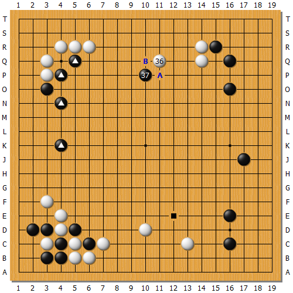
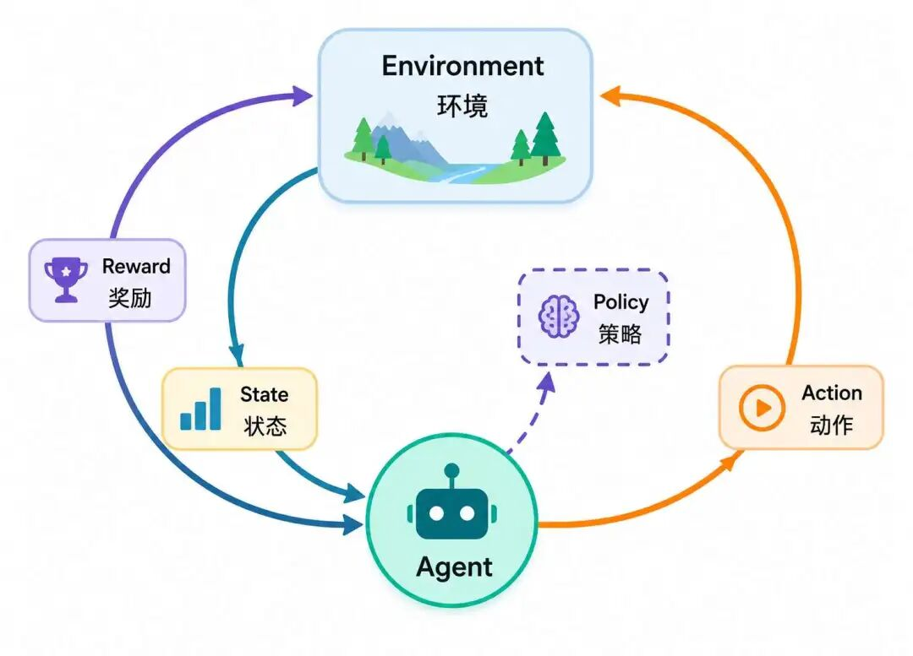

"预训练阶段可能终结，因为人类数据已耗尽，但算力仍在增长。强化学习将成为下一个Scaling Law。"--Ilya Sutskever（OpenAI联合创始人）
朝歌城里，纣王的摘星楼修得比山还高，里头镶金嵌玉晃得人睁不开眼。西岐来的伯邑考一身素白衣裳跪在殿前，身后那架七香车却亮得扎人--黄铜车架裹着白玉边儿，七种香木拼成的车轮飘着松柏香，听说这宝贝是黄帝老祖宗打仗留下的神物。
侍卫按伯邑考说的，手刚搭上车辕，怪事就来了！那车"嗡"地一声自个儿浮起三寸高，轮子转得跟风车似的，侍卫心里想着"往左"，车就左拐；想着"绕圈"，它真滴溜溜在大殿上转了三圈。满殿文武看得直咂嘴："乖乖！这要是拉上战马，还不踏平四方啊？"
妲己歪在纣王怀里嗑瓜子儿，眼珠子却黏在伯邑考脸上--这小伙子长得真俊！眉清目秀像画里人，偏偏脊梁挺得笔直。她扭着腰凑过去，假意摸车上的玉雕："公子这手真巧，教教妾身弹琴可好？"指尖就往伯邑考袖口蹭。
伯邑考"唰"地缩回手，脸绷得像块青石板："娘娘自重！臣为父赎罪而来，不是给您逗闷子的！"这话像盆冷水浇得妲己脸色发青。
纣王正乐呵呵盘算用七香车打仗呢，妲己突然捂脸哭嚎："陛下！他刚摸我手！"转头又指着七香车尖叫，"这妖车会读人心，定是西岐派来探秘的！"
伯邑考气得浑身发抖："妖妇！你祸害忠良……"话没说完，妲己抄起金杯砸向车架！"哐当"一声，白玉崩了个角。她扯着纣王袖子撒娇："您瞧！他骂我是妖，不就是骂您昏君吗？"
侍卫一拥而上按住伯邑考。他挣扎着望向七香车--香木裂了缝，玉石碎碴儿溅了一地。这车本该换回老父亲的命啊！他盯着纣王怀里的妲己，牙缝里挤出话："今日你断的是车辕，来日断的就是商朝江山！"
此上故事纯属虚构，情节出自于中国古代名著《封神榜》中伯邑考为救父而献车的故事，但是"自动驾驶"版的七香车却是中国古代人对于"强化学习"的实现最早的雏形。
机器学习或深度学习能够发挥作用的前提是我们预先准备了丰富的数据。这些数据具备可提取的特征，使得模型训练能够结合反向传播、梯度下降等数学工具，寻找到事物的内在规律，最终训练出模型的预测能力，从而涌现出了"智能"。
但是有一些事物却是无法从"静态数据"中来提取出特征的，或者说根本没有明显特征。比如汽车驾驶的场景瞬息万变：暴雨中翻倒的婴儿车、罕见的追尾事故、高速公路上的断头路；
深度学习的另一困局来自于其对标注数据的深度依赖，标注数据不仅仅需要清晰处理，而且有的标注数据需要人工处理，OpenAI前期的成功是建立在雇佣大量标注工人的基础之上的。另外在某些场景下，标注数据是极度稀缺的，如医疗诊断和工业控制。
这一切的破局，开始于Google的DeepMind团队！
2016年3月，AlphaGo以4:1的比分击败围棋世界冠军李世石（九段），这场对决成为人工智能史上的里程碑事件。其惊艳之处首先体现在打破"十年预言"的认知革命：围棋因天文级复杂度，超过10³⁶⁰种局面，远超国际象棋，曾被断言"AI十年内无法攻克"，而AlphaGo却提前十年实现突破，彻底颠覆学界预期。
更令人震撼的是它展现出超越人类直觉的决策能力，第二局第37步的"五路肩冲"被棋圣李世石惊叹为"像围棋上帝之手"，这一反常规的落子瞬间瓦解职业棋手对传统"棋形美感"的认知框架；

AlphaGo通过强化学习实现了全局胜率评估（而非局部缠斗计算），展现出接近人类的"战略直觉"，但却拥有更精准的宏观逻辑控制能力，使李世石赛后坦言"从未感受过如此彻底的压迫感"。此役引发的全球性社会效应同样空前：超1亿观众通过直播见证人类顶级智慧被机器超越，韩国棋院甚至打破惯例授予AlphaGo"名誉九段"称号，标志着围棋界对AI能力的正式认可。这场胜利不仅是一场游戏的胜负，更是人类对智能本质认知的分水岭。
强化学习起源于1906年俄国数学家安德雷·马尔可夫（Andrey Markov） 提出的马尔科夫性质，即：未来状态仅取决于当前状态，和历史路径无关。
我们举几个生活中的例子就能够理解的，比如今天是晴天，那要预测明天是晴天，还是多云，还是下雨都与过去的天气无关，即使过去一周的天气都是下雨，也只和今天的是晴天的天气有关。
再举个例子，比如你现在堵车堵在高速路口，你下一选择走哪条路，跟你之前在哪里被堵车过无关。无论你是因出门晚而堵车，还是因送孩子上学绕路导致堵车，只有当前高速路口的状况能决定后续路线的成功率，与此前任何堵车原因都无关。
但马尔科夫的性质的局限在于，它仅描述被动观察的随机演化，不涉及主动决策或控制，如赌徒只能被动等待结果，无法选择策略。因此，历经几十年的时间，霍华德、布莱克韦尔等科学家们逐渐引入了"决策"的过程，发展出了"马尔科夫决策过程"，英文简称MDP，其为现代强化学习的出现奠定了基础。
为了使得被动观察者能够进行有效的决策，马尔科夫决策过程引入了五个核心要素，为了加深理解，我们以外卖骑手配送为例：

状态指的是"外卖机器人送外卖"这个场景中当前的所有状态信息，如外卖机器人当前的位置、电动车电量、订单剩余时间、待送单总数等。
动作指的是骑手/机器人（智能体）为了按时甚至提前将外卖送到顾客手中，可以执行的动作，比如走捷径或饶远路，拒绝接单或增加接单，调整配送顺序等
转转概率指的是骑手/机器人在执行动作之后，从某个状态转移到另外一个状态的概率。不是很好理解，比如执行"走捷径"这个动作之后，从派送中的状态转移到派送完成的状态概率是怎样？
比如执行"走捷径"这个动作之后，从"订单配送中"转移到"订单完成"这个状态的概率是70%，而转移到"订单延迟"的概率是30%。
所以"转移概率"是由执行某动作所引发的一系列的状态发生的概率所产生的，并且所有的状态转移概率之和是1。
在动作执行完之后，要给智能体及时的反馈，比如准时送达则+100分，订单超时-100分。
| 订单状态说明 | 即时奖励分值 |
|---|---|
| 订单准时送达 | +100 |
| 订单超时送达 | -100 |
| 获得顾客好评 | +50 |
| 收到顾客差评 | -150 |
未来奖励的折算系数，这个也不好理解，这里怎么有折算的事情？一般在财务管理里面才有未来价值折现的说法。
因为强化学习的设计原理是通过奖励（利益）来驱动智能体不断地决策来实现目标的，以送外卖机器人为例，如果折扣因子为0，它就只关注当前瞬间的奖励，完全无视后续影响。比如遇到红灯时，系统看到"当前踩油门能快速通过路口（即时奖励为正）"，就会直接加速闯红灯，完全忽略闯红灯可能引发的危险。
当折扣因子1 时：外卖机器人将即时收益和长远收益同等看待，会为了长期安全牺牲短期便利。比如在拥堵路段，系统不会为了"当前抢道超车获得短暂通行效率提升"而冒险，决策偏向绝对保守的安全最优。
马尔科夫决策过程通过五要素描述了一个智能体实现长期奖励最大化的模型框架，但是具体要怎样实现长期奖励最大化呢？光靠五要素是不够的。
咱们继续以外卖机器人/骑手送外卖为例，要是想长期赚大钱，他应该怎样去做，才能实现长期的利益最大化呢？
一个最朴素的想法是，不断去尝试，然后通过积攒经验制定一套可行的策略。
比如什么情况下应该接单，什么情况下应该拒单，什么时候可以抄小路，什么时候必须走大路。
这样的方式当然可以让骑手赚点小钱，但是想实现利益最大化还是有很多挑战，归根结底就是这种方法不科学，我们来看看假如一个懂马尔科夫决策过程五要素的老骑手，他会怎么做？
首先他会收集当前环境的状态：午高峰商圈、电动车电量50%、手上2单未送。
然后根据当前状态来制定策略，这时候，老骑手会拒接远单，优先抢出餐快、顺路单，同时绕开拥堵路段。
所以策略的本质就是根据当前状态（位置、订单、时间等），选择最可能赚更多钱的动作（接单、路线、沟通方式等）。
策略不但是马尔科夫决策过程的求解的关键，也是整个强化学习的核心。我们看看马尔科夫决策过程与策略的关系，还是以外卖机器人为例：
| MDP要素 | 外卖机器人/骑手实例 | 与策略的关系 |
|---|---|---|
| 状态 (S) | 骑手位置、时间、电动车电量、手上订单数、商家出餐速度等 | 策略的输入：骑手根据当前状态决定动作（如电量低时策略强制去充电） |
| 动作 (A) | 接单/拒单、路线选择（先送A还是B）、与顾客沟通方式等 | 策略的输出：策略决定了在状态下选择哪个动作（如拒接出餐慢的商家单） |
| 转移概率 (P) | 接单后准时送达的概率、商家出餐延迟概率、交通拥堵概率等 | 策略的约束：骑手需预估动作结果（如接远单可能超时），策略需规避高风险动作 |
| 奖励 (R) | 配送费+小费、准时奖、差评罚款、时间成本（如等待耗时的隐性损失） | 策略的目标：策略通过选择动作最大化长期奖励（如为高补贴雨雪天多接单） |
| 折扣因子 (γ) | 骑手对未来收益的重视程度（如γ=0.8更看重当下赚钱，γ=0.95愿为长期客户关系牺牲当前单） | 策略的导向：影响策略是短视（抢当前高单价）还是长视（培养老客减少差评） |
懂了策略和马尔科夫决策过程的关系，外卖骑手就可以通过以下三招来实现利益的最大化。
这一招的策略核心是根据状态（时段、路况）动态规划路线。
比如午高峰用"逆路线送单"，先送远单再回商圈接单）；
或者记录商家出餐速度，如果烧烤店慢则避开，快餐店快则优先抢。
这个场景对应"马尔科夫决策过程"：其中"动作"就相当于"路线选择"，"奖励"就相当于"节省的时间"，即多送单就可以多赚钱。
这一招的策略核心就是用马尔科夫决策中的"折扣因子"平衡短期和长期收益。
高γ就代表"长期主义"，维护好评率，因为差评少就等于系统派好单，但这样可能牺牲短期单量；
而低γ就代表短期主义，比如雨雪天狂接补贴单，但可能延误导致差评多，后续接单难。
这一招的策略核心是通过行为数据"教"算法适应你自己的习惯。
比如每天固定完成30单，让算法默认你是"稳定骑手"，优先派顺路单；
或者常驻某商圈，让系统判定你熟悉路线，多派附近订单。
这个场景对应"马尔科夫决策过程"：其中"状态"就相当于"历史接单数据"，"动作"就相当于"固定任务量"，而"奖励"就等于"系统派单质量提升"。
通过上面的几招，大概就能"训练"出一个长期利益最大化，长期能高效赚钱的外卖机器人了。
关于策略我们可能还需要继续唠叨几句，因为策略是整个强化学习非常核心的概念。
强化学习的最终目标不是"预测"，而是"决策"。环境模型、价值函数等都是为找到好的决策方式服务的工具，而策略本身就是这个待求解的答案。无论算法过程如何，最终交付给用户的就是一个能在特定环境中做出优秀决策的"策略"。
策略（Policy）在形式上是一个函数，是一个将环境状态（State）映射到动作（Action）的选择规则：
（1）确定性策略情况下：直接输出唯一动作， $\pi(s) = a$
（2）随机性策略情况下：输出动作的概率分布 $\pi(a|s) = P(\text{动作} a \mid \text{状态} s)$
注：s表示状态，a表示动作，符号 $\pi$ 表示策略。
策略的具体实现形式随问题复杂度演进：
表格型策略：适用于离散状态/动作空间
例：迷宫导航中，每个网格位置（状态）对应一个固定移动方向（动作），存储为查询表。
函数逼近策略：处理连续或高维状态
使用参数化函数（如神经网络）拟合映射关系：
$\pi_\theta(s) \rightarrow a 或 \pi_\theta(a|s) \rightarrow [0,1]$
例：Atari游戏AI中，CNN将像素画面（状态）映射为手柄动作的概率分布。
分层策略：解决复杂决策链
高层策略制定目标（如"导航到A点"），底层策略执行具体动作（如"左转30°"）。
策略还是实现强化学习中"探索-利用权衡"的关键，由于强化学习的数据来源于智能体的探索新动作，但是过度探索浪费机会，如骑手总试新路导致超时，过度利用则陷入局部最优，会导致骑手永远拒接远单，错过高价订单。
策略的映射规则不是静态的，而是通过强化学习动态优化，以达成：
$$ \max_\pi \mathbb{E}\left[ \sum_{t=0}^{\infty} \gamma^t r_t \right] $$ $$ \underbrace{\max_{\pi}}_{\substack{\text{对策略 }\pi \\ \text{取最大化}}} \underbrace{\mathbb{E}}_{\substack{\text{取期望} \\ \text{(考虑随机性)}}} \Bigg[ \underbrace{\sum_{t=0}^{\infty}}_{\substack{\text{从当前时刻 }t=0 \\ \text{累积到未来}}} \underbrace{\gamma^{t}}_{\substack{\text{折扣因子} \\ \text{未来奖励重要性衰减}}} \underbrace{r_{t}}_{\substack{\text{在时刻 }t \\ \text{获得的即时奖励}}} \Bigg] $$其中 $\gamma$ 是折扣因子， $r_t$ 是即时奖励。
此公式是强化学习的核心优化目标，旨在找到一个最优策略 $\pi$ ，以最大化（从初始状态开始）未来所有折扣奖励总和的期望值。
而达成这一目标则需要通过试错探索（如ε-greedy）以收集经验，然后利用策略梯度（Policy Gradient）或价值函数（如Q-learning）迭代更新策略的映射规则。
而这其中的关键挑战在于平衡探索（尝试新动作）与利用（选择已知高奖励动作）。
策略作为状态->动作的映射函数，是强化学习驱动智能体自主决策的终极产物，其质量直接决定系统性能
总之策略在强化学习中扮演着终极目标的角色，是所有计算和优化的最终载体。它不仅是连接感知与决策的桥梁，其形式更直接决定了算法的适用范围和能力上限。
马尔科夫性质（Markov Property） 系统在下一时刻的状态分布仅取决于当前状态，与历史路径无关。这一"无记忆性"假设是整个 MDP 框架得以成立的数学前提，也是将复杂时序问题简化为可求解模型的关键。
马尔科夫决策过程（MDP, Markov Decision Process） 在马尔科夫链的基础上引入决策环节，由状态、动作、奖励、转移概率、折扣因子五要素构成的数学框架。它将"智能体在不确定环境中如何做出序列决策"这一问题形式化，是强化学习理论体系的核心数学骨架。
折扣因子（Discount Factor, γ） 取值于 [0, 1] 区间的权重系数，用于在累积奖励中对未来回报进行衰减加权。γ 越接近 0，智能体的决策越偏向即时收益；γ 越接近 1，则越重视长期回报。实际工程中通常取 0.9 或 0.99，以在远见与数值稳定性之间取得平衡。
策略（Policy, π） 从状态空间到动作空间的映射规则，规定了智能体在每一状态下应采取的动作。可分为确定性策略 π(s) = a 与随机性策略 π(a∣s) ∈ [0, 1]。强化学习的最终目标，即是求解使未来累积折扣奖励的期望最大化的最优策略 π*。